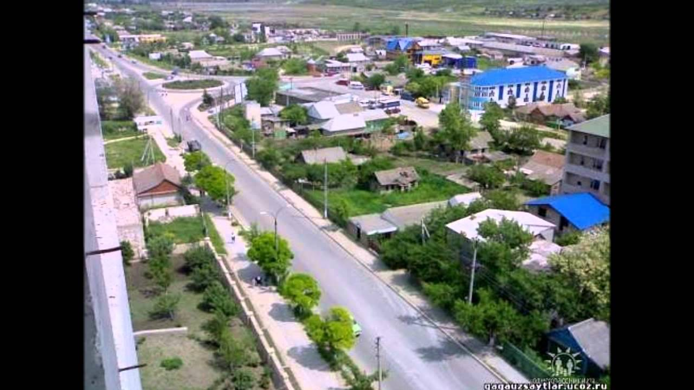
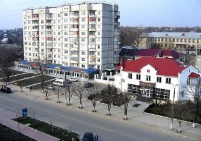
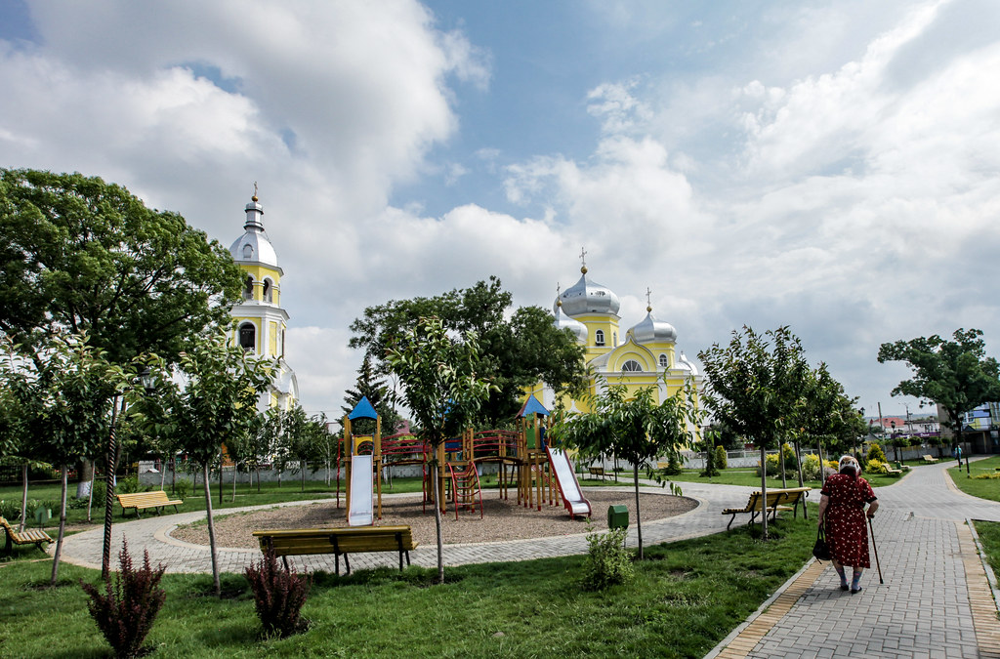

Komrat – zengin kasaba.

Komrat kasabası — Gagauz Avtonom Bölgesinin baş kasabası.
Gagauz Erinin baş kasabası Komrat bir önemni politika , ekonomika,kultura merkezi.
Komrat buluner Moldovanın üülen tarafında , deredä Yalpug. Komratta Gagauziyanın Başkanatı,
Başkan hem Halk Topluşu buluner. Kasaba kuruldu 1789 yılda.
Ileeri dooru okuyun...





Достопримечательности
- Православный собор Святого Иоанна
- Краеведческий музей
- Художественная галерея
- Библиотека Ататюрка
- Аллея славы